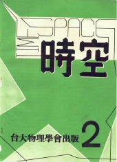

《時空》第二期
目錄
建立蓬勃的生氣
劉源俊
2
物理學漫談
丘宏義
3
自然科學的極限
黃慰慈
9
變分法應用之一例
顏晃徹
11
物理界的對稱性質
蔡武陽
14
歡送畢業同學敬言
倪維斗
16
力場的傳播
馮毅安
19
近代物理科學的進展
鐘孝全
20
讀書拾遺
吾思
21
四維的世界
胡承瑜
22
介紹一年級的同學幾本可讀的書
一行
23
科學與宗教
李學叡
24
談談幾本量子力學的書
林少達
25
畢業雜感
陳民暨
27
假如 T = T' - 4Y
凌
28
臨別贈言
阿篤
28
想到哪裏寫到哪裏
周毅
29
系友來鴻
31
歸來吧！歸來
33

出版者：台大物理學會
印刷廠：興豐印刷廠
出版日期：民國五十四年六月十五日
台大訓導處登記第209號